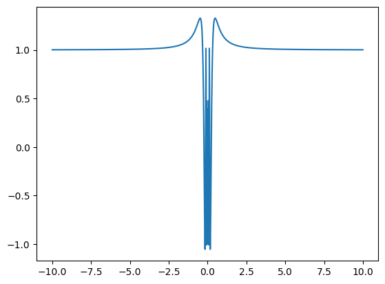
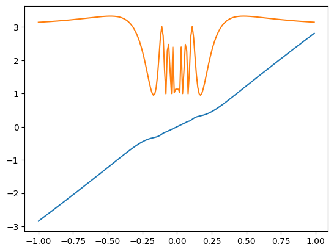
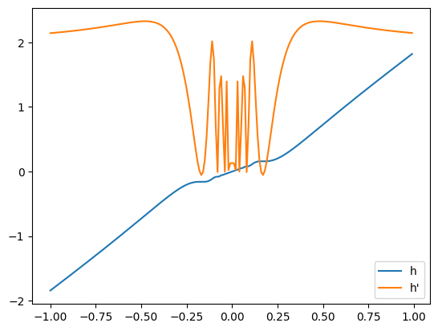
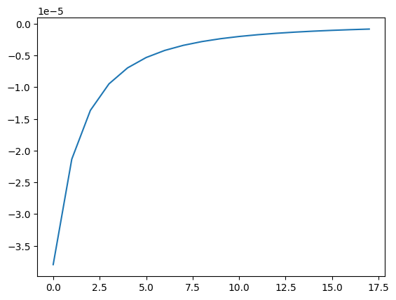
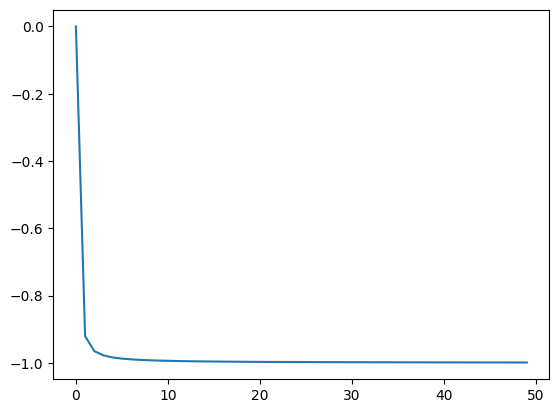
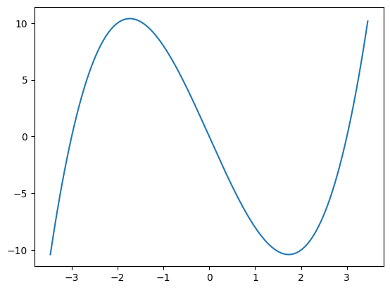
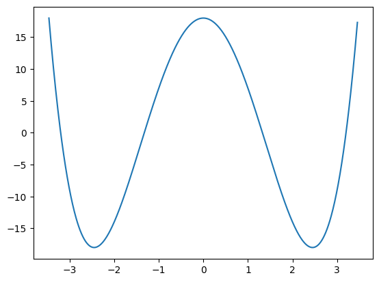
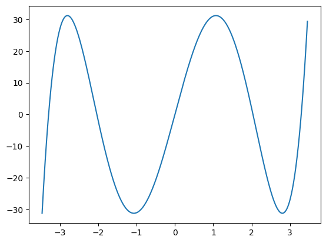

Oral Centrale math-info 2022
Contents
Oral Centrale math-info 2022#
Séance 1#
Exercice 1#
import numpy as np
import numpy.random as rd
def diag(n):
d = np.zeros((n, n))
for i in range(n):
d[i][i] = rd.random()
return d
diag(5)
array([[0.75590625, 0. , 0. , 0. , 0. ],
[0. , 0.46222223, 0. , 0. , 0. ],
[0. , 0. , 0.51387553, 0. , 0. ],
[0. , 0. , 0. , 0.07316926, 0. ],
[0. , 0. , 0. , 0. , 0.59883116]])
def Matrice(A, B):
return A.dot(B) - B.dot(A)
Matrice(diag(5), rd.rand(5, 5)) # les coefficients diagonaux sont nuls
array([[ 0. , -0.00093383, -0.05652652, -0.20734206, -0.01121623],
[ 0.03021969, 0. , -0.07591093, -0.78224259, -0.26882098],
[ 0.13057232, 0.03958457, 0. , -0.22415573, -0.5927848 ],
[ 0.28694401, 0.70281204, 0.44646503, 0. , -0.03742902],
[ 0.88778905, 0.8488703 , 0.08213275, 0.05941685, 0. ]])
Exercice 2#
def temps(a, b):
Sn = 0
T = 0
while -a <= Sn <= b:
T += 1
if rd.random() < 0.5:
Sn += 1
else:
Sn -= 1
return T
temps(5, 7)
56
def moyenne(a, b):
m = 0
for i in range(10000):
m += temps(a, b)
return m / 10000
moyenne(5, 7)
47.6132
Exercice 3#
def S(a):
s = 0
for k in range(1, 1001*a):
s += a/(k**2 + a**2)
return s
S(1), S(5)
(1.075674547634752, 1.4697972263214525)
import matplotlib.pyplot as plt
X = [i for i in range(50)]
Y = [S(x) for x in X]
plt.plot(X, Y)
plt.show()
np.pi/2

1.5707963267948966
Exercice 4#
def f(x):
return x**2*np.sin(1/x)
def fp(x):
return 2*x*np.sin(1/x) - np.cos(1/x)
def g(x):
return f(x) + 2*x
def gp(x):
return fp(x) + 2
def h(x):
return f(x) + x
def hp(x):
return fp(x) + 1
X = np.arange(-10, 10, 0.01)
Y = [fp(x) for x in X]
plt.plot(X, Y)
plt.show()

X = np.arange(-1, 1, 0.01)
Y_G = [g(x) for x in X]
Y_GP = [gp(x) for x in X]
plt.plot(X, Y_G)
plt.plot(X, Y_GP)
plt.show()

Y_H = [h(x) for x in X]
Y_HP = [hp(x) for x in X]
plt.plot(X, Y_H)
plt.plot(X, Y_HP)
plt.legend(['h', 'h\''])
plt.show()

N = range(18)
Y_Hp = []
for n in N:
n = 30 + 10*n
Un = 2*n*np.pi - 0.5/n
Y_Hp.append(hp(1/Un))
plt.plot(N, Y_Hp)
# plt.plot([0, 17], [0, 0])
plt.show()

Séance 2#
Exercice 1#
import scipy.optimize as resol
def fact(n):
if n == 0:
return 1
else:
return n*fact(n-1)
def f(n):
def aux(x):
s = 0
for k in range(n):
s += float(x**k/fact(k))*np.exp(-x)
return s - 1/2
return aux
X = range(50)
a = [resol.fsolve(f(n), n) for n in X]
plt.plot(X, a)
plt.plot(X, X)
plt.plot(X, list(X)[1:] + [50])
plt.legend(['a_n', 'n', 'n+1'])
plt.show()
/home/qfortier/.local/lib/python3.9/site-packages/scipy/optimize/_minpack_py.py:175: RuntimeWarning: The iteration is not making good progress, as measured by the
improvement from the last ten iterations.
warnings.warn(msg, RuntimeWarning)
plt.plot(X, [3*(a[n] - n) for n in X])
plt.show() # on conjecture 3(an - n) -> -1, donc an = n - 1/3 + o(1)

Exercice 2#
def U(n):
m = 0
for i in range(1000):
M = np.random.randint(0, 2, (n, n))
m = max(m, np.linalg.det(M))
return m
def V(n):
m = 0
for i in range(1000):
M = np.random.random((n, n))
m = max(m, np.linalg.det(M))
return m
[U(n) for n in range(11)], [V(n) for n in range(11)]
# les valeurs de U(n) et V(n) semblent différentes...
([1.0,
1.0,
1.0,
2.0,
2.0,
4.0,
7.999999999999998,
7.999999999999998,
10.999999999999996,
27.999999999999996,
29.99999999999999],
[1.0,
0.9992119724591383,
0.879984995957695,
0.6731638455544089,
0.5682973642085094,
0.5143713085953068,
0.3705087832159508,
0.37974816571195663,
0.31209830992642085,
0.18334652559585984,
0.3178696571316157])
def M(n, p):
X = []
for i in range(n):
if rd.random() < p:
X.append(1)
else:
X.append(0)
m = np.zeros((n, n))
for i in range(n):
for j in range(n):
m[i][j] = X[i]*X[j]
return m
k = 0
for i in range(1000):
if np.trace(M(5, 0.5)) <= 1:
k += 1
k/1000
0.184
Exercice 3#
def D1(n, a, b):
if n == 2:
return a**2 -2*b
if n == 3:
return a**3 - 3*a*b
return a*D1(n-1, a, b) - b*D1(n-2, a, b)
b = 3
for n in range(3, 6):
X = np.arange(-2*b**.5, 2*b**.5, 0.01)
Y = [D1(n, x, b) for x in X]
plt.plot(X, Y)
plt.show()
# a -> Dn(a, b) semble avoir n racines simples



Exercice 4#
def A(n):
M = np.zeros((n, n))
for i in range(n):
for j in range(n):
if abs(i-j) == 1:
M[i][j] = 1
return M
def P(n):
M = np.zeros((n, n))
for i in range(n):
for j in range(n):
M[i][j] = np.sin((i + 1)*(j + 1)*np.pi/(n+1))
return M
def B(n):
p = P(n)
return np.linalg.inv(p).dot(A(n)).dot(p)
B(3), B(4), B(5)
(array([[ 1.41421356e+00, 1.11022302e-16, -7.85046229e-17],
[ 4.59869434e-17, -1.23259516e-32, 2.68031548e-16],
[-3.00549228e-16, 1.11022302e-16, -1.41421356e+00]]),
array([[ 1.61803399e+00, 8.58762917e-17, 1.62719828e-16,
9.97475620e-18],
[ 2.21949412e-16, 6.18033989e-01, 2.42466058e-16,
-2.44746987e-16],
[ 2.18771489e-16, 7.77863339e-17, -6.18033989e-01,
1.74764570e-16],
[-1.55951271e-16, -4.11007160e-16, 1.60002919e-16,
-1.61803399e+00]]),
array([[ 1.73205081e+00, 1.31403490e-16, -1.11022302e-16,
4.55882793e-16, 4.65558222e-16],
[-2.34617731e-17, 1.00000000e+00, 1.11022302e-16,
-1.17935829e-17, -4.93313798e-16],
[ 1.81941580e-16, -4.85988356e-17, -1.23259516e-32,
4.75492987e-17, 8.57934461e-17],
[-2.26338407e-16, -5.74412155e-17, 1.11022302e-16,
-1.00000000e+00, -8.95532900e-17],
[ 1.43071681e-16, 2.51730245e-16, -1.11022302e-16,
1.49295547e-16, -1.73205081e+00]]))